1. Ouvrir le fichier
Le fichier de suivi (.json) est rangé sur le Google Drive. Il est chiffré : sans mot de passe, il est illisible. Ouvrez l'outil dans Chrome ou Edge, sur un ordinateur où le Drive est installé (« Google Drive pour ordinateur ») : c'est ce qui permet l'enregistrement automatique.
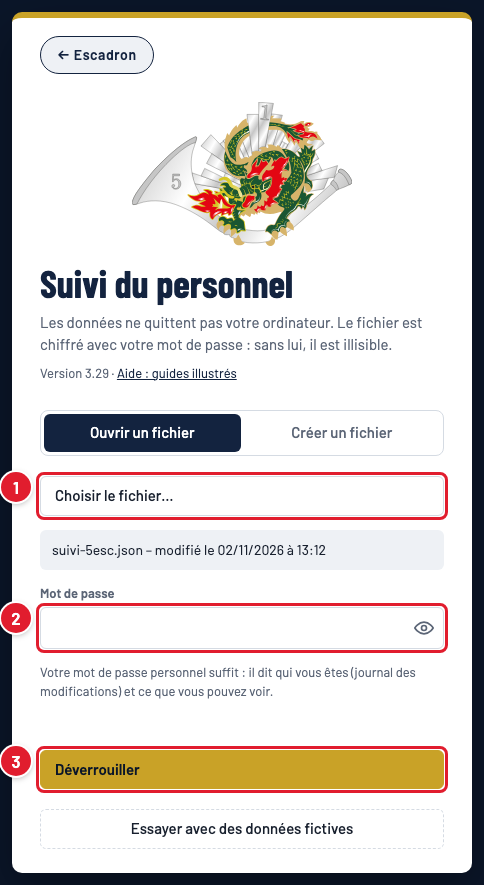
- Choisir le fichier… : allez dans le dossier Google Drive et choisissez le fichier de suivi.
- Tapez votre mot de passe personnel. Il dit qui vous êtes : votre nom est écrit tout seul dans le journal des modifications.
- Déverrouiller.
2. L'écran principal
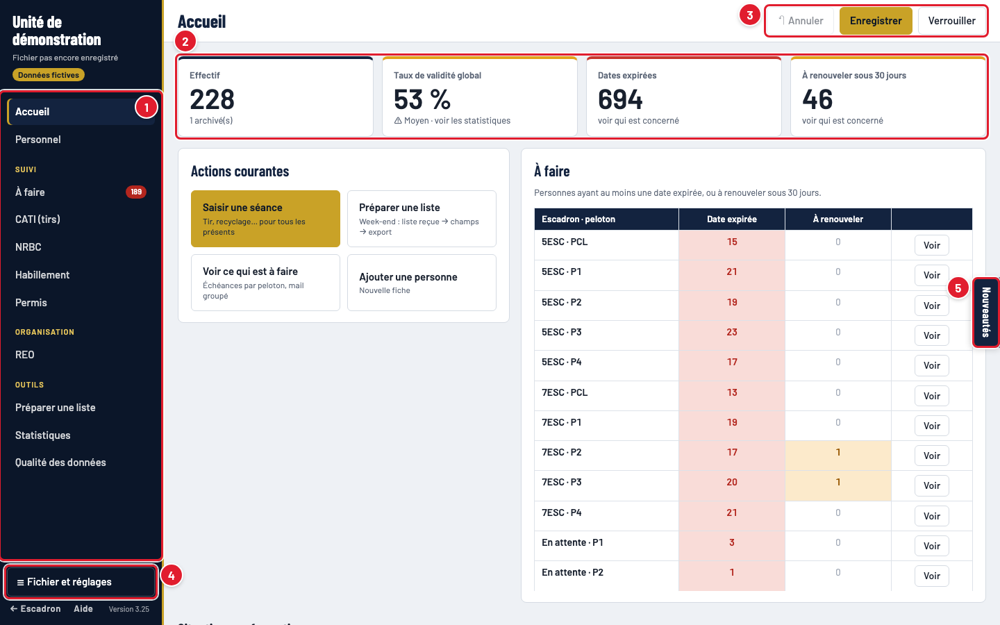
- Le menu : chaque page de l'outil. La pastille rouge de « À faire » compte les personnes qui ont au moins une date expirée.
- Les chiffres clés : effectif, taux de validité, dates expirées, à renouveler. Cliquez dessus pour voir les personnes concernées.
- Annuler, Enregistrer, Verrouiller (voir l'étape suivante).
- Fichier et réglages : imports, exports complets, archives, journal, réglages, comptes.
- Nouveautés : ce qui a changé dans l'outil (un point doré signale une nouveauté).
Tout en bas du menu, le lien Aide ouvre ces guides dans un nouvel onglet : le fichier reste ouvert.
3. Enregistrer, annuler, verrouiller
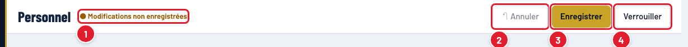
- « Modifications non enregistrées » : il y a des changements pas encore écrits dans le fichier.
- Annuler (ou Ctrl+Z) : revient en arrière, modification par modification.
- Enregistrer (ou Ctrl+S). Avec Chrome ou Edge, l'outil enregistre aussi tout seul quelques secondes après chaque modification.
- Verrouiller : ferme le fichier. À faire avant de quitter le poste.
Verrouillage automatique
Après 15 minutes sans activité, l'écran se verrouille tout seul. Rien n'est perdu, même ce qui n'était pas enregistré : retapez votre mot de passe pour reprendre.
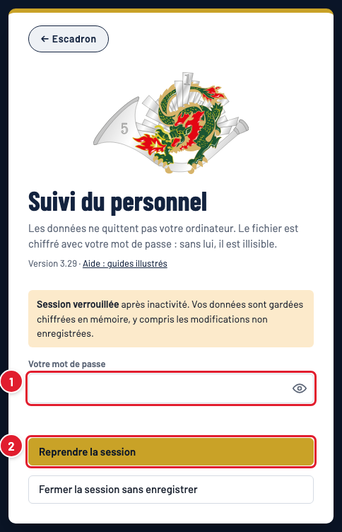
- Votre mot de passe.
- Reprendre la session.
4. Trouver une personne
Page Personnel : tout le personnel, une ligne par personne.
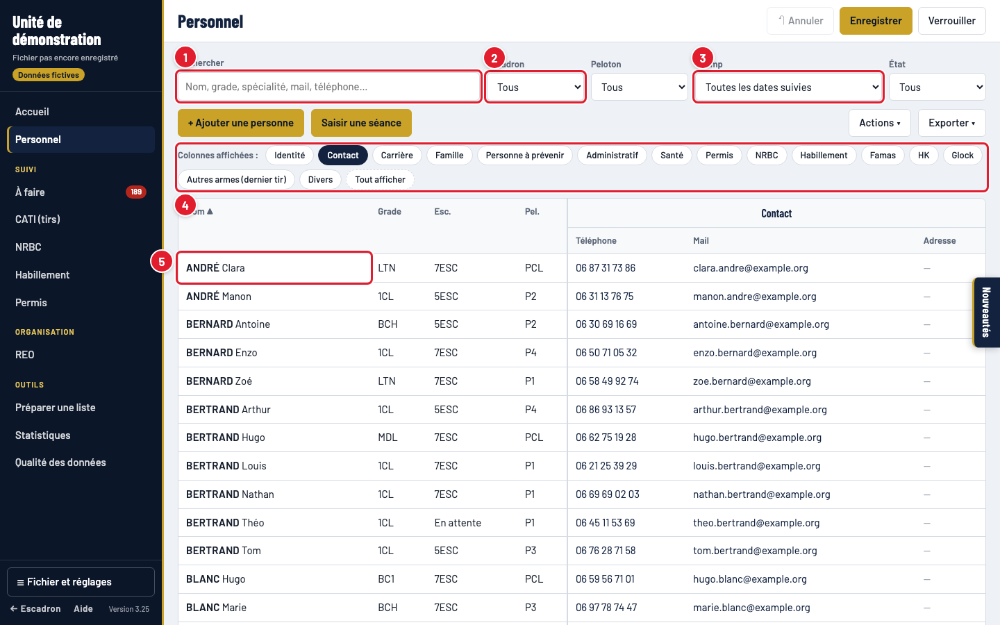
- Rechercher : un nom, un grade, une spécialité, un mail ou un numéro.
- Escadron et peloton : ne garder qu'une partie du personnel.
- Champ et État : par exemple « Famas Bravo » + « Expiré » pour voir qui doit refaire son tir.
- Colonnes affichées : cliquez sur un groupe (Contact, Famas, Santé…) pour afficher ou masquer ses colonnes.
- Cliquez sur une ligne pour ouvrir la fiche de la personne.
5. La fiche d'une personne
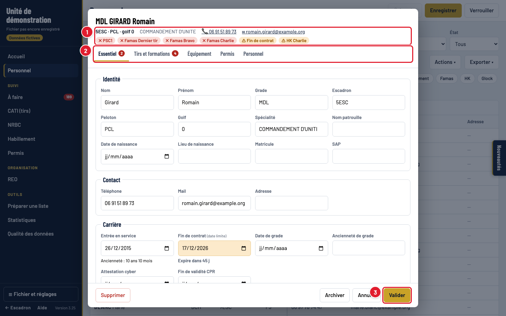
- Le bandeau : rattachement, téléphone, mail, et toutes les alertes de la personne (✕ rouge = expiré, ⚠ orange = bientôt).
- Les onglets : Essentiel, Tirs et formations, Équipement, Permis, Personnel. Le chiffre rouge indique combien de dates sont expirées dans l'onglet.
- Valider enregistre la fiche. Archiver : la personne quitte l'unité (sa fiche est gardée dans les archives).
6. Les couleurs des dates
Pour un tir, un recyclage secourisme, une formation NRBC… on saisit la date à laquelle il a été fait. L'outil calcule l'échéance (12 mois pour les tirs, le PSC1, le SC1…) et colore la case :
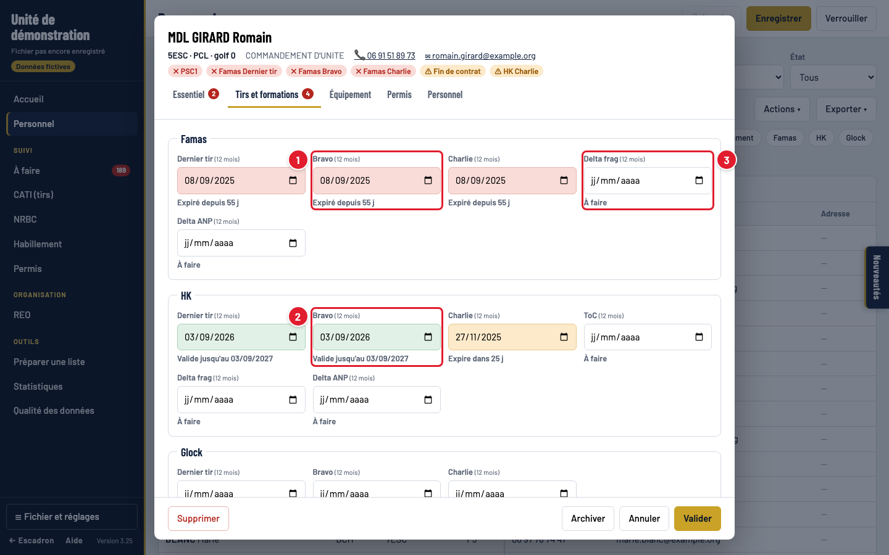
- Famas Bravo expiré (rouge).
- HK Bravo à jour (vert).
- Jamais fait : pas de date.
7. Les dates de fin : fin de contrat, VMP
Certaines dates ne sont pas « la date où c'est fait » mais la date où ça se termine. Elles sont marquées (date limite).
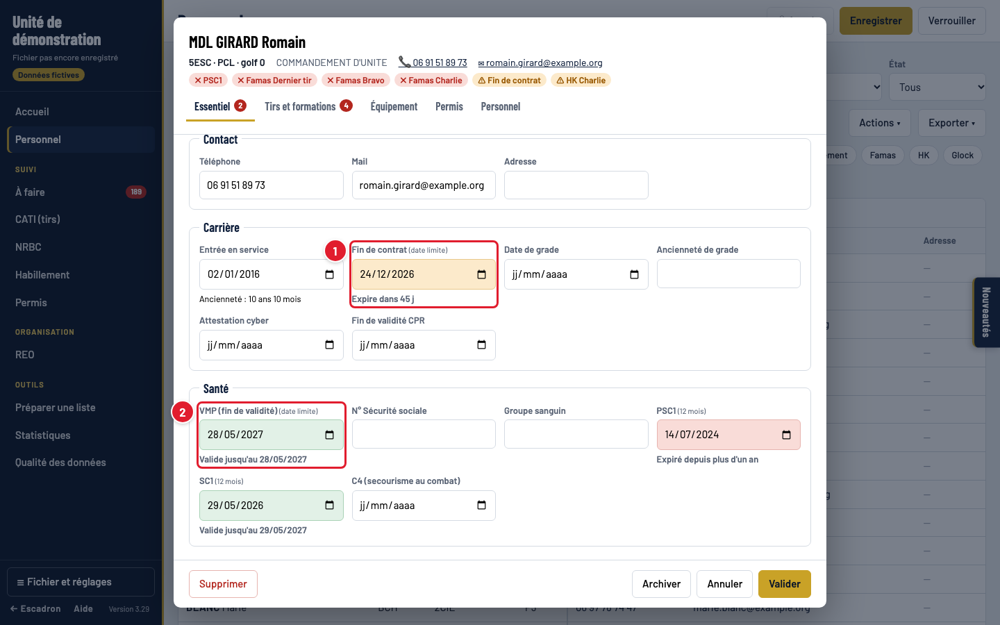
- Fin de contrat : saisissez la date de fin. Alerte orange 90 jours avant.
- VMP (fin de validité) : saisissez la date de fin de validité de la visite médicale, pas la date de la visite. Alerte 60 jours avant.
8. Ajouter des personnes
Une personne
Page Personnel, + Ajouter une personne : une fiche vide s'ouvre.
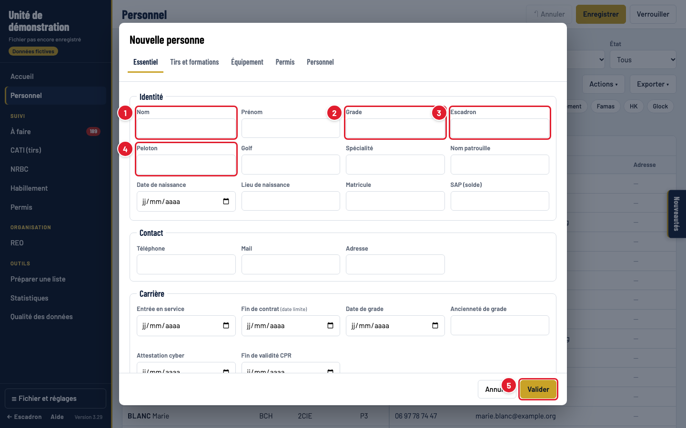
- Nom et prénom.
- Grade (liste proposée).
- Escadron.
- Peloton : indispensable pour les pages par peloton et les accès des chefs.
- Valider. Le reste peut être complété plus tard.
Plusieurs personnes d'un coup
Pour des arrivants ou les stagiaires d'une formation : Personnel › Actions ▾ › Créer plusieurs fiches (liste collée)…
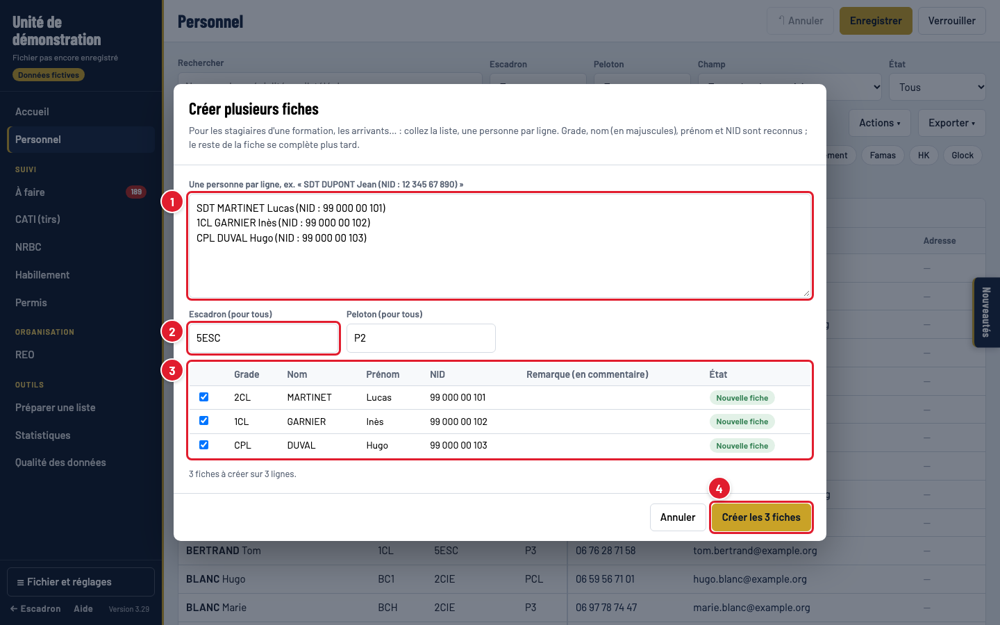
- Collez la liste, une personne par ligne : grade, NOM en majuscules, prénom, et le NID s'il est connu.
- Escadron et peloton communs (facultatif).
- L'aperçu : « Nouvelle fiche » est coché ; « Déjà dans le suivi » ne l'est pas (pas de doublon).
- Créer les fiches.
9. Saisir une séance
Après un tir, un recyclage ou un passage en atmosphère viciée : une seule saisie pour tous les présents. Page Personnel, Saisir une séance.
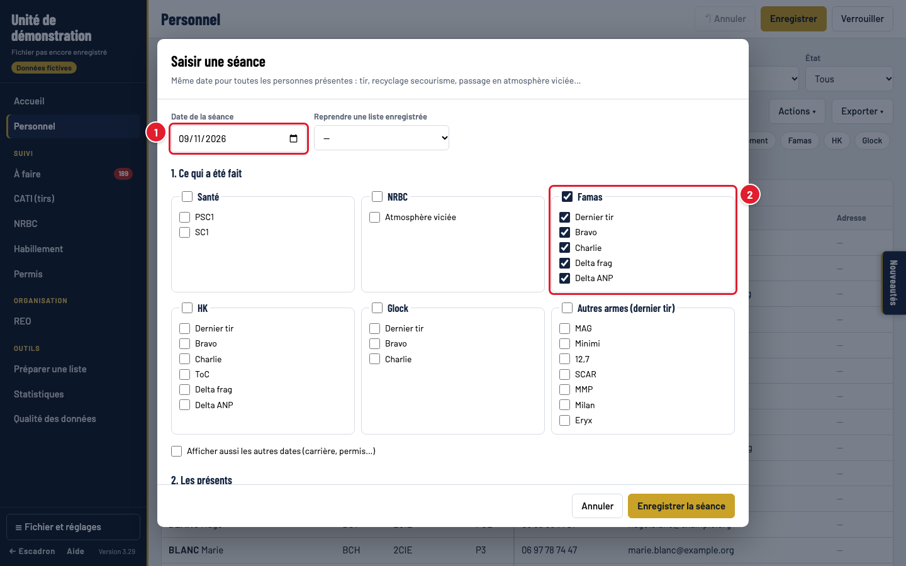
- La date de la séance.
- Cochez ce qui a été fait (ici : tout le groupe Famas).
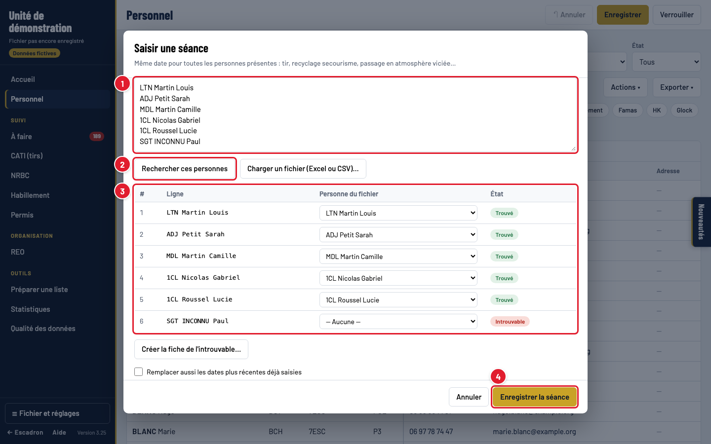
- Collez la liste des présents (copiée d'un mail, d'Excel…), une personne par ligne.
- Rechercher ces personnes : chaque ligne est rapprochée d'une fiche.
- Vérifiez : « Trouvé » en vert. Pour un « Introuvable », choisissez la bonne personne dans le menu ou créez sa fiche.
- Enregistrer la séance. Tout s'annule d'un seul « Annuler » si besoin.
10. Préparer une liste personnalisée
Pour un week-end, un stage, une mission : on reçoit une liste de noms, et on veut leurs informations (téléphones, tirs, permis…). Menu Préparer une liste.
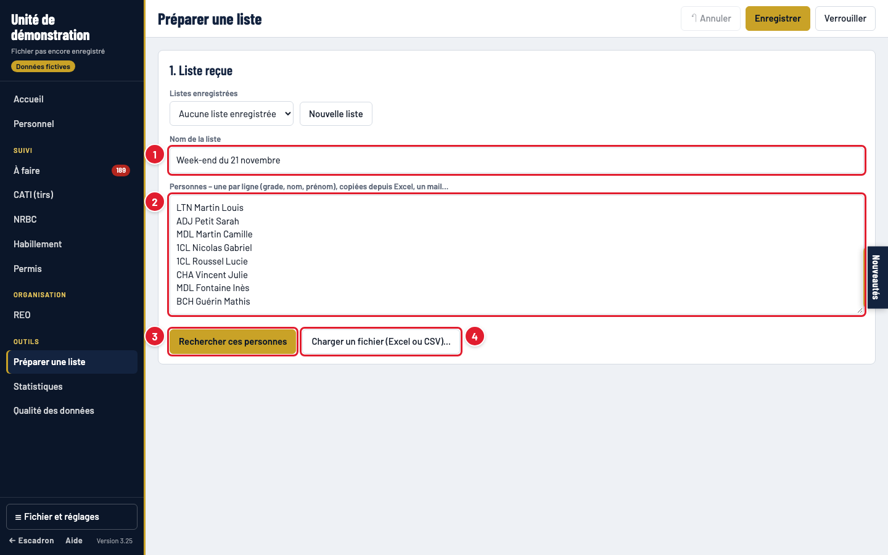
- Le nom de la liste (ex. « Week-end du 21 novembre »).
- Collez les noms, un par ligne (grade, nom, prénom, dans n'importe quel ordre).
- Rechercher ces personnes.
- Ou chargez directement un fichier Excel.
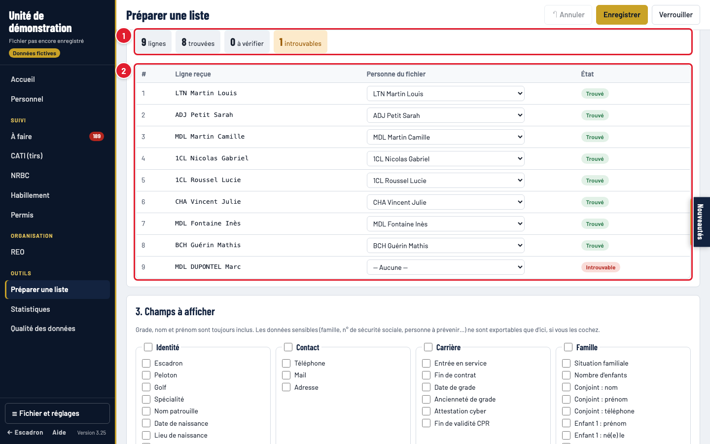
- Le bilan : trouvées, à vérifier, introuvables.
- Chaque ligne reçue et la personne retrouvée : corrigez avec le menu si besoin.
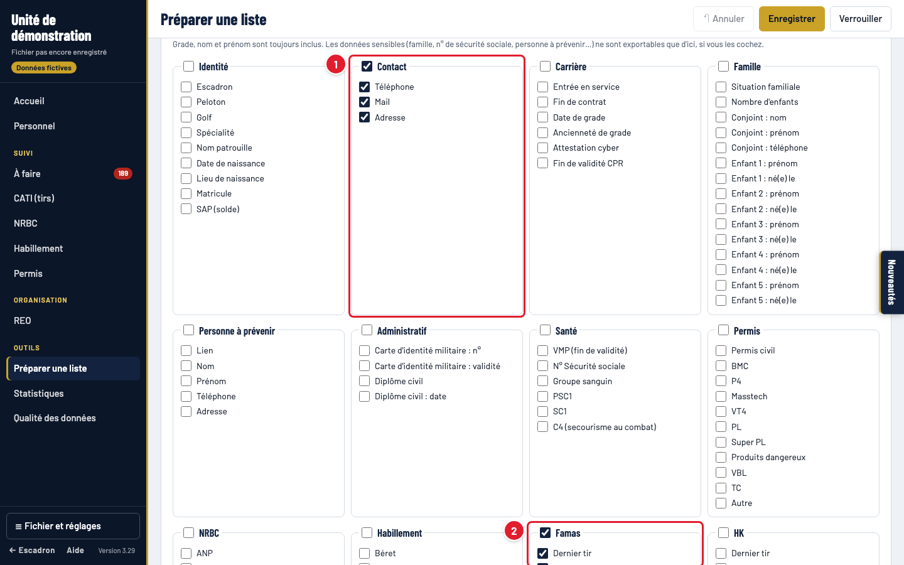
- Cochez les informations voulues (ici : Contact)…
- … et par exemple le groupe Famas.
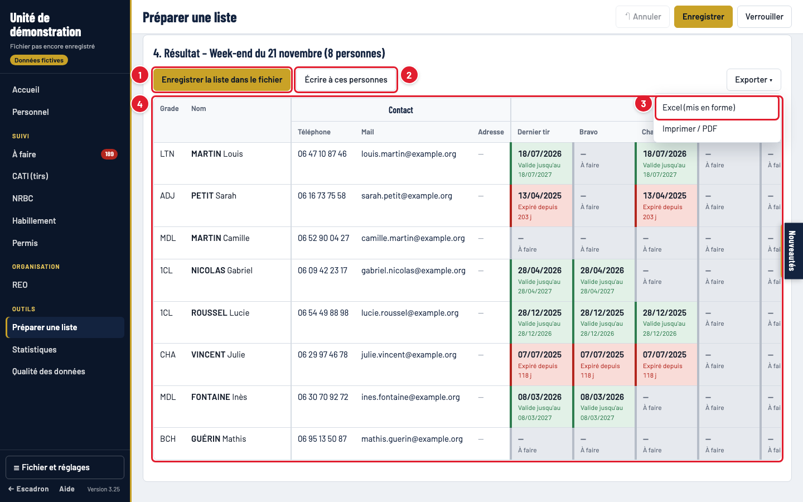
- Enregistrer la liste dans le fichier : on la retrouve plus tard (et elle peut servir pour une séance).
- Écrire à ces personnes : ouvre votre messagerie avec les adresses en copie cachée.
- Exporter ▾ : Excel mis en forme ou impression.
- Le tableau, avec les mêmes couleurs que les fiches.
11. Ce qui est à faire
Page À faire : qui doit refaire quoi, peloton par peloton.
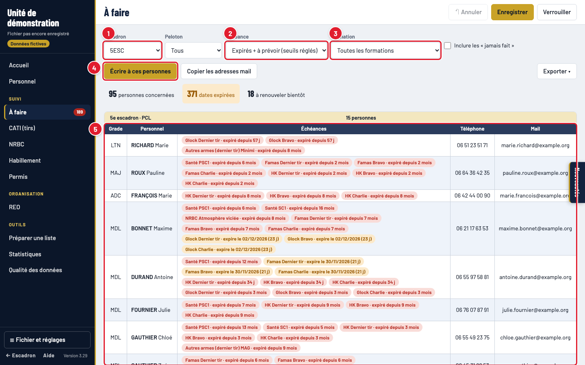
- Escadron (et peloton à côté).
- Échéance : déjà expirés, ou expirés + ce qui expire bientôt.
- Formation : toutes, ou une seule (ex. Famas).
- Écrire à ces personnes : un mail à toutes les personnes affichées (copie cachée).
- Le tableau : chaque personne et ses échéances, avec téléphone et mail.
12. CATI, NRBC, Habillement, Permis
Une page par thème, présentée par peloton et par groupe, prête à imprimer.
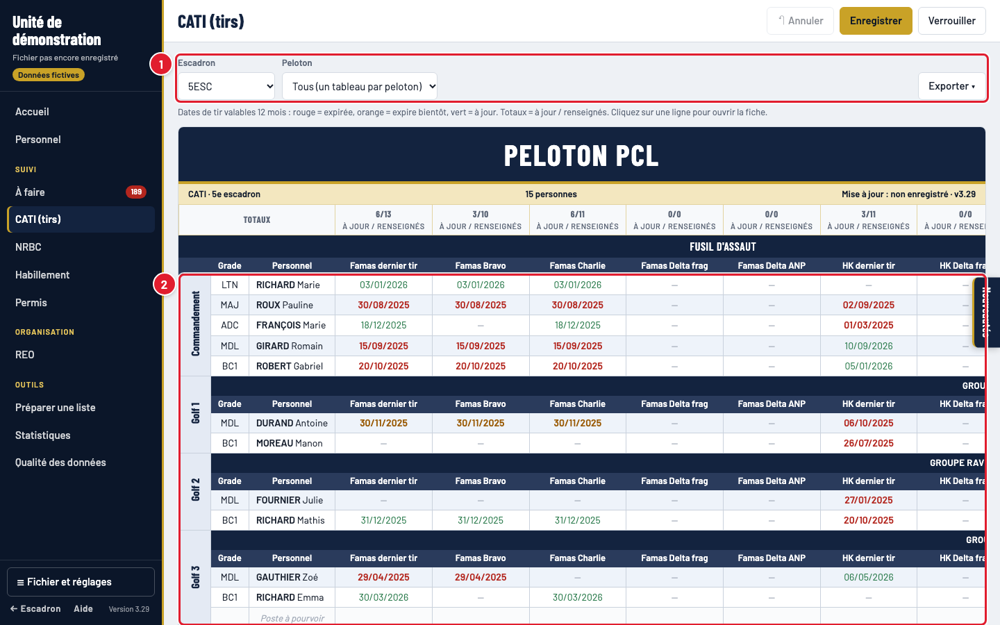
- Escadron, peloton (« Tous » = un tableau par peloton, une page par peloton à l'impression) et Exporter ▾.
- Les dates en couleur (rouge, orange, vert). Cliquez sur une ligne pour ouvrir la fiche.
NRBC et Habillement : les tailles (avec un récapitulatif par peloton pour les commandes). Permis : titulaires, éligibles et « à vérifier ».
13. Statistiques
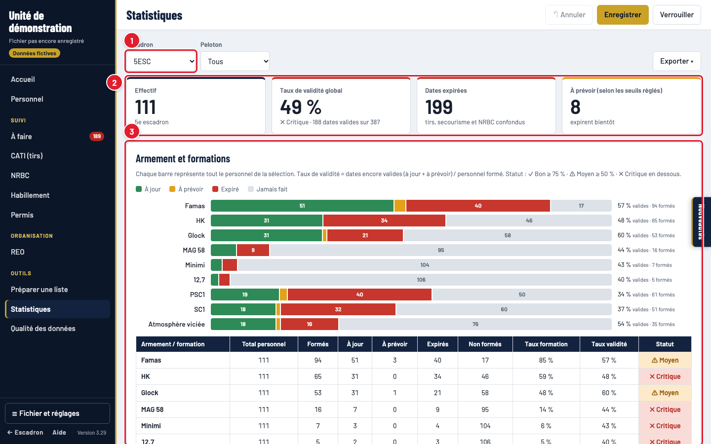
- Escadron et peloton.
- Les chiffres clés : effectif, taux de validité global, dates expirées, à prévoir.
- Armement et formations : à jour / à prévoir / expiré / jamais fait, et un statut ✓ Bon, ⚠ Moyen, ✗ Critique. Plus bas : taux par peloton, permis, tailles, évolution mois par mois.
14. Adresses mail
Toutes les adresses d'une catégorie, pour écrire aux officiers, aux sous-officiers ou aux militaires du rang : Personnel › Actions ▾ › Adresses mail.
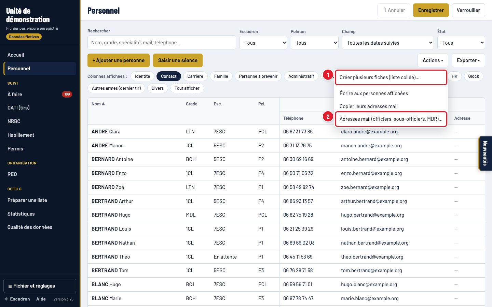
- Créer plusieurs fiches (voir étape 8).
- Adresses mail.
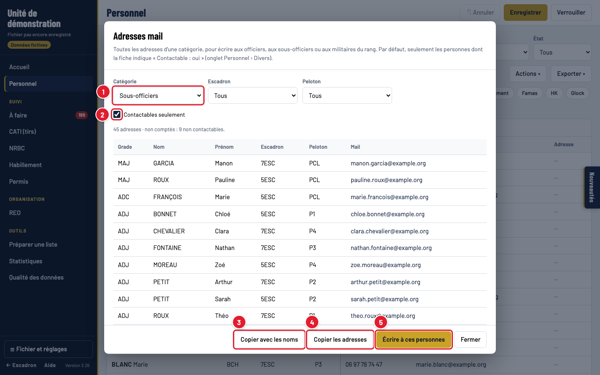
- Catégorie : officiers, sous-officiers, militaires du rang ou tout le monde (et escadron, peloton).
- « Contactables seulement » : seulement les fiches où « Contactable » est sur oui (onglet Personnel › Divers de la fiche).
- Copier avec les noms : une ligne par personne, se colle aussi dans Excel.
- Copier les adresses : toutes les adresses à la suite, à coller dans le champ Cci d'un message.
- Écrire à ces personnes : ouvre votre messagerie avec les adresses en Cci (s'il y en a trop pour un lien mail, elles sont copiées : il suffit de les coller).
15. Exporter et imprimer
Chaque page a un menu Exporter ▾ : Excel (mis en forme, avec les couleurs) ou Imprimer / PDF.
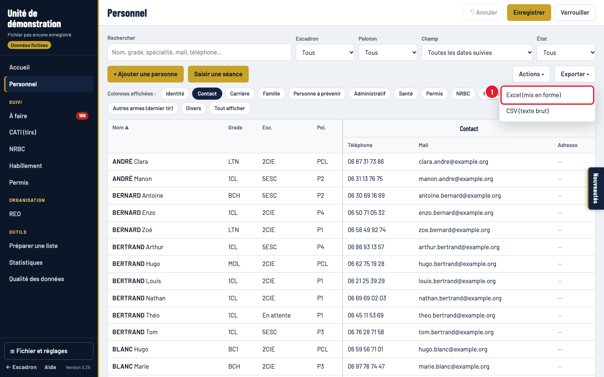
- Excel (mis en forme).
16. Qualité des données
Les erreurs de saisie repérées automatiquement. La pastille dorée dans le menu dit combien il y en a.
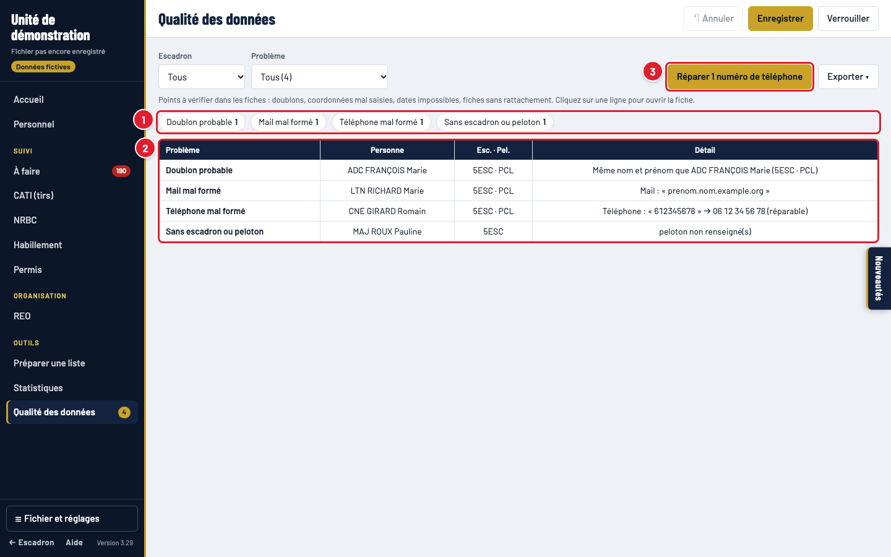
- Le type de problème : doublon probable, mail ou téléphone mal saisi, date impossible, fiche sans escadron ou peloton…
- La liste : cliquez sur une ligne pour corriger la fiche.
- Réparer les numéros : remet le 0 perdu par Excel (612345678 → 06 12 34 56 78) d'un seul coup.
17. Fichier et réglages, journal
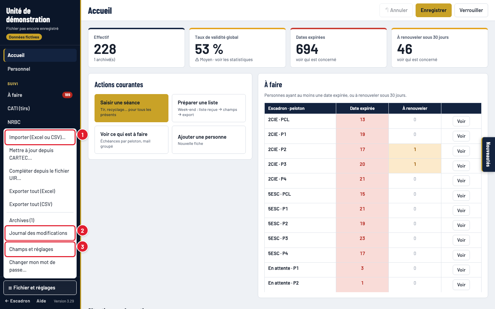
- Importer un tableau Excel, mettre à jour depuis CARTEC (rattachements, postes), compléter depuis le fichier UIR. Un aperçu montre toujours ce qui va changer avant de l'appliquer.
- Journal des modifications : qui a modifié quoi, et quand.
- Champs et réglages : champs des fiches, validités, délais d'alerte, verrouillage, et les boutons Comptes et accès, Mot de passe de secours, Copie de sauvegarde.
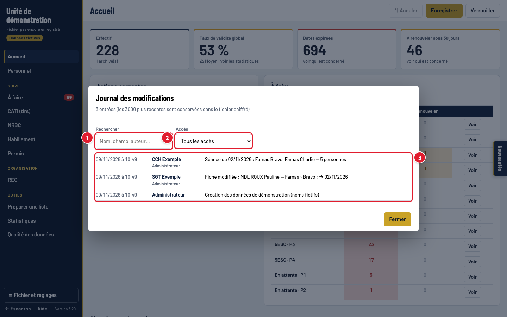
- Rechercher un nom, un champ, un auteur.
- Filtrer par accès (administrateur, chef de peloton…).
- Chaque modification avec le nom de son auteur, déduit de son mot de passe.
Archives (même menu) : les personnes parties. Elles n'apparaissent plus nulle part, mais on peut les restaurer.
18. Comptes et mots de passe
Chacun a son propre mot de passe : Fichier et réglages › Champs et réglages › Comptes et accès…
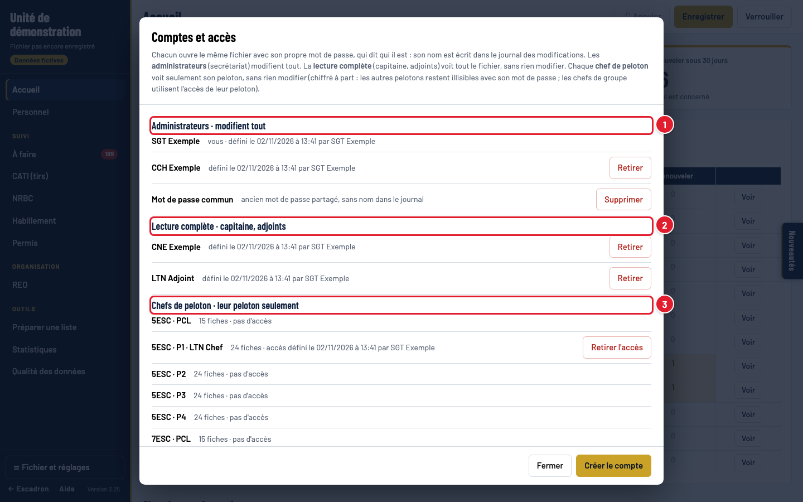
- Administrateurs (secrétariat) : modifient tout.
- Lecture complète (CDU, adjoints) : voient tout, ne modifient rien.
- Chefs de peloton : voient seulement leur peloton, ne modifient rien.
Créer un compte
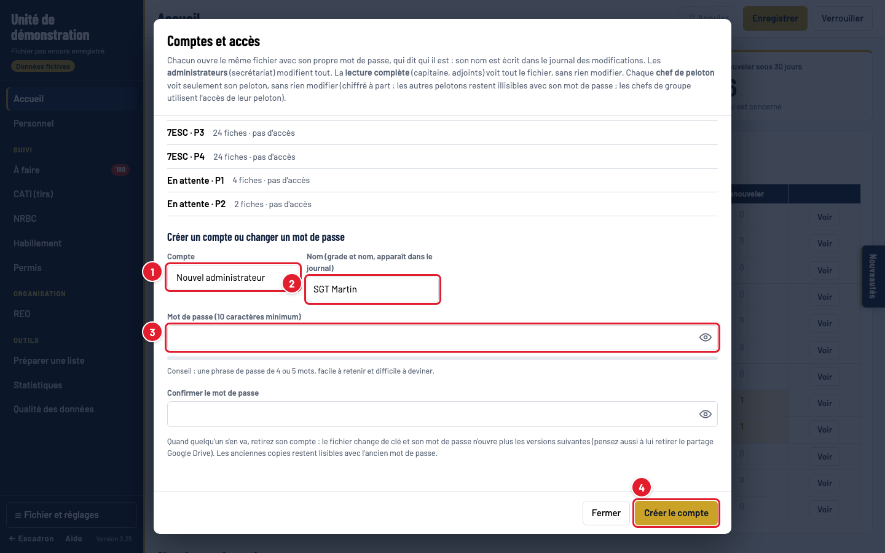
- Le type : nouvel administrateur, nouvelle lecture complète, ou chef d'un peloton. Choisir un compte existant permet de changer son mot de passe.
- Le nom (grade et nom) : c'est lui qui apparaîtra dans le journal.
- Le mot de passe (10 caractères minimum, deux fois). Une phrase de 4 ou 5 mots est plus solide et plus facile à retenir.
- Créer le compte, puis enregistrez le fichier. Donnez le mot de passe à la personne de vive voix, pas par mail.
Quand quelqu'un s'en va
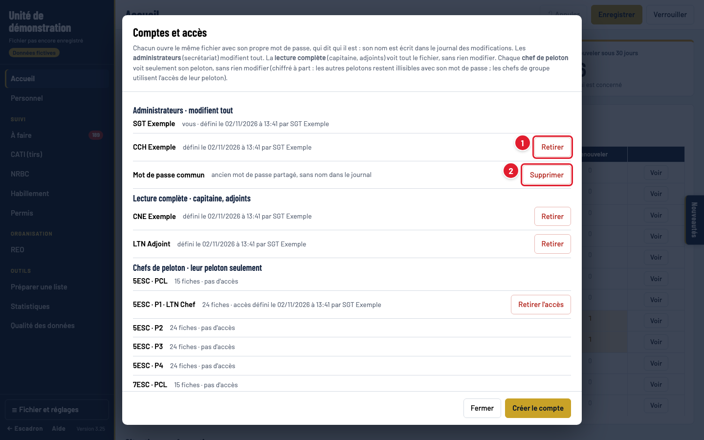
- Retirer : le fichier change de clé, son mot de passe n'ouvre plus les versions suivantes.
- « Mot de passe commun » : l'ancien mot de passe partagé. Une fois que chacun a son compte, supprimez-le (depuis votre compte nommé).
19. Travailler à plusieurs
- Plusieurs administrateurs peuvent avoir le fichier ouvert en même temps. Toutes les 30 secondes, l'outil récupère les modifications des autres (après la synchronisation du Drive).
- Si deux personnes ont modifié la même case, une fenêtre demande quelle version garder. Sinon tout est fusionné automatiquement.
- Évitez quand même de travailler à deux sur les mêmes fiches au même moment.
- Le fichier contient des données personnelles : verrouillez en quittant le poste, ne communiquez jamais un mot de passe par écrit.
Suivi du personnel · guide du secrétariat · images réalisées avec des données fictives.